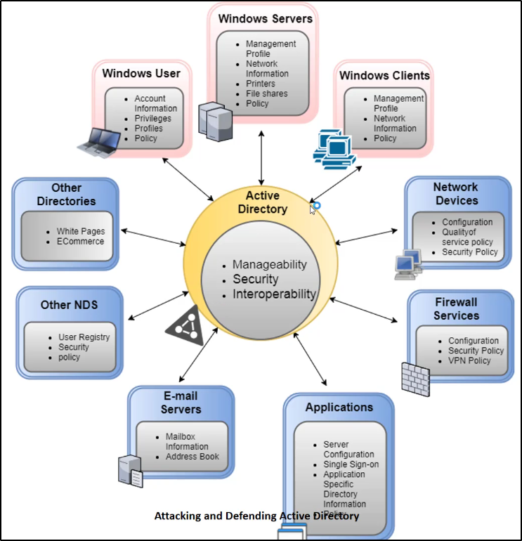
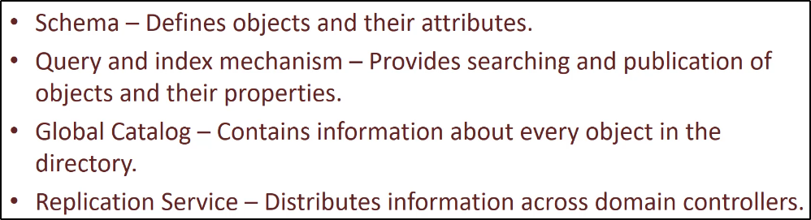
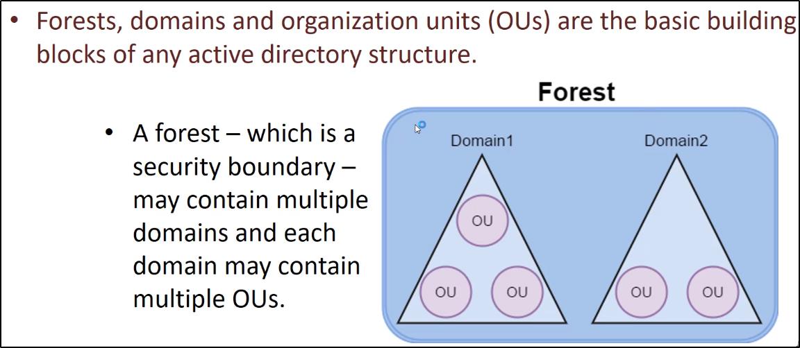

Active Directory Definition:
https://docs.microsoft.com/en-us/previous-versions/windows/it-pro/windows-server-2003/cc780036(v=ws.10)?redirectedfrom=MSDN
https://technet.microsoft.com/en-us/library/cc780036(v=ws.10).aspx
Cosa è Active Directory:- E' un servizio Directory, usato per gestire reti di PC Windows
- Conserva le informazioni degli oggetti sulla rete, per renderle disponibili agli utenti o amministratori
- Permette la gestione centralizzata della sicurezza di una rete

Esistono diversi oggetti nell'ambito dell' Active Directory:- Schema: Definisce gli oggetti e i loro attributi (E.G. definisce un Windows User e i suoi attributi)
- Query e meccanismi di indicizzazioni: Provvedono la ricerca e la pubblicazione di oggetti e le loro proprietà
- Global Catalog: Contiene informazioni riguardo ogni oggetto nella directory
- Replication Service: Distribuisce informazioni attraverso altri Domain Controller

Elementi principali di una struttura Active Directory:- Foreste: Contengono e gestiscono differenti domini. Vengono considerati dei domini di sicurezza più esterni.
- Domini: Contengono e gestiscono Organization Units (OUs)
- Organization Units (OUs):
Generalmente si parla di Active Directory di una foresta, non di un dominio.

Quello che facciamo è abusare delle funzioni di trust tra domini e foreste.
Inoltre abuseremo di altre componenti AD.
Quindi avremo a che fare di funzioni da exploitare e non di exploit veri e propri.